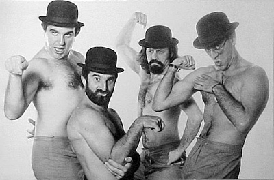

Responder a este comentário
Mondegreen, Virundum, Soramimi, Pitching
por Giba Assis Brasil em 09 de outubro de 2009Não sei se em japonês tem palavra pra tudo. Aliás, não tenho a menor ideia. Mas o caso do "soramimi" é interessante: segundo a Wikipédia, o significado original da palavra, "ouvido vazio" (empty ear), evoluiu para "surdez fingida" (feigned deafness), ou seja: a brincadeira de ouvir errado que a gente poderia chamar de mondegreen, mas que, por ser intencional, eu prefiro associar ao virundum.
Como "kashi" em japonês é "letra de música", a expressão "soramimi kashi" surgiu para designar uma das grandes manias nacionais do Japão moderno, ao lado do flipperama e do sudoku: a reinterpretação irônica do rock'n'roll, a perplexidade diante da cultura do império ocidental, "esses romanos são todos uns loucos". Com o tempo (e o tempo das palavras anda passando muito rápido ultimamente), a expressão perdeu o qualificativo e manteve o significado específico: soramimi é a interpretação intencionalmente errada de uma letra de música escrita em outra língua, geralmente o inglês - provocada, é claro, por similaridades sonoras. Um virundum bilíngue.
"Honyohan", parece, significa "mijar na rua" em japonês - uma contravenção muito comum no Brasil e, pelo jeito, absolutamente cotidiana nas ruas centrais de Tóquio. Acontece que, para os japoneses, "hold your hand" soa muito parecido com "honyohan". Daí que o clássico dos Beatles "I wanna hold your hand" virou um soramimi muito popular, "Aho na honyohan". Só não entendi se isso significa um convite à festa ("vamos todos mijar na rua") ou uma condenação ("quem mija na rua é um idiota"). Faltam dados. Assim como em muitos outros exemplos facilmente encontráveis na internet, mas difíceis de entender (e, menos ainda, de achar graça) para quem não fala japonês.
Mas, no Japão, o soramimi é um grande sucesso. O popular programa de TV "Tamori Club", apresentado por Kazuyoshi Morita (que inverteu as sílabas de seu sobrenome para se tornar o comediante Tamori), mantém desde 1992 um segmento chamado "Soramimi hour", em que o público envia suas reinterpretações de músicas estrangeiras: aparentemente uma espécie de videocassetada musical, na prática uma celebração do que Sofia Coppola chamou de "lost in translation"; não uma tentativa de entendimento, mas uma afirmação, irônica que seja, de um ponto de vista particular, uma diferença cultural, uma autonomia possível na globalização, quase um isolamento.
Não que o soramimi seja uma particularidade japonesa. Recentemente, a semelhança sonora entre duas palavras totalmente diferentes em árabe e russo quase provocou um incidente diplomático. Um vídeo em que um grupo de jovens palestinos cantava o tema folclórico "Bladi, bladi" ("Pátria, pátria") ganhou legendas em russo que transformaram o refrão em "Blyadi, blyadi" ("Putas, putas"). A versão foi parar no YouTube e teve 2 milhões de acessos em poucos dias, mas eu duvido que alguém fora da Rússia tenha realmente se divertido com isso.
Aqui no Brasil, ainda que nos faltasse a palavra, já conhecíamos o conceito de soramimi há bastante tempo. Alguns anos atrás, o refrão "I got what you need / so tell me what you need" (2001) da cantora de rap americana Eve Jeffers foi soramimizado pelo pessoal do Pânico e virou "Agarra o guaxinim, pega o guaxinim". Um pouco antes, a torcida do Flamengo tinha feito o rap "Whoomp, there it is!" do Tag Team (1993) soar como "U, tererê!" Mas muito antes disso, lá por 1983, Leo Jaime já tinha transformado o "Tell me once again", da banda brasileira disfarçada Light Reflections, em "Telma, eu não sou gay"; e o "In the mood", popularizado pelo Glenn Miller, em "Edmundo".
Antes ainda, no final dos anos 1970 na Rádio Gaúcha, um quadro do programa humorístico "Discocuecas" (do quarteto formado por Julio Fürst, Jorge Gilberto Dorsch, Gilberto Travi e João Antônio Araújo) rodava músicas da época cantadas em inglês para que, entre uma frase e outra, uma voz em falsete fizesse uma "tradução simultânea" guiada apenas pela sonoridade, criando um efeito humorístico que funcionava pelo acúmulo, pela quantidade de bobagens por unidade de tempo.
E certamente não foram os Discocuecas que inventaram esse tipo de jogo de palavras: apenas recriaram, com talento, a tradição do humor de rádio, que no Brasil vem dos anos 1940, com a PRK-30 de Lauro Borges e Castro Barbosa, cujo personagem Megatério Nababo d'Alicerce se orgulhava de "falar inglês em vários idiomas" - uma boa definição do espírito do soramimi.
**********
E o pitching? Esse não tem nada a ver com o resto. Mas tem.
No dicionário, pitching pode ser arfagem (uma manobra de aviação) ou pavimentação com cascalho; como adjetivo, equivale a íngreme ou inclinado. Pitch é arremesso, lance, lançamento, mas também lote de mercadorias, banca de mascate, clímax, declividade, campo de críquete, passo de engrenagem, distância entre fotogramas, agudeza de som; como verbo, pode significar armar, acampar, expor à venda, afinar, fixar residência temporária, empilhar feno ou ainda, claro, arremessar, lançar, atirar. Pitcher é o batedor do beisebol, o cara que fica com o taco. "Project pitching", uma expressão recente, significa, singelamente, lançamento ou apresentação de um projeto. Ao tomar emprestada a palavra para o portuglês, eliminaram o projeto, ou supuseram que ele estaria implícito. Agora, no Brasil (pelo que eu sei, apenas no Brasil), pitching é sinônimo de apresentação oral.
Mais uma vez, não é que o inglês (ou qualquer outra língua) tenha palavra pra tudo: a gente é que termina encontrando.

Em 1979, os Discocuecas faziam soramimis e não sabiam.
{kind=link}
TEM MAIS
Pátria ou putas: o vídeo palestino com legendas em russo.
Série de soramimis inglês-português coletados por "marinovisky".
Soramimi ilustrado do "Fortuna imperatrix mundi" (trecho da "Carmina Burana" de Carl Orff), do latim pro inglês.